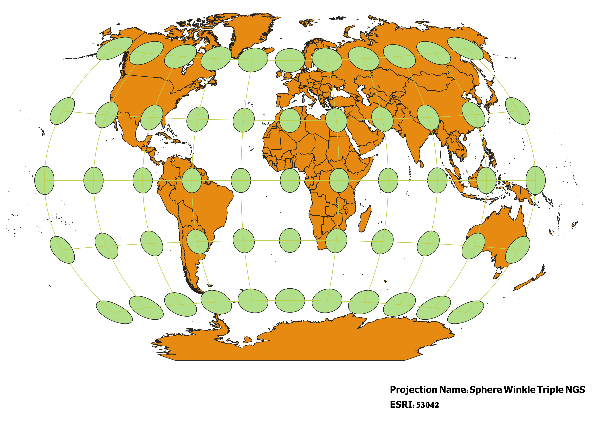

In this project I learned how to display images in different projections
Describe in your own words how you displayed the map in different projections using QGIS
In order to display this map in different projections I used the CRS tab in Project Properties to select the different projections. Then once I selected the projections I used the Indicatrix Mapper plug-in I installed to apply Tissot's indicatrices to my maps.
WGS84 Projection
Some observations

Aitoff Projection
Some observations

WGS 84 Pseudo-Mercator Projection
Some observations

Sphere Winkle 1 Projection
Some observations

World Cylindrical Equal Area Projection
Some observations

World Equidistant Conic Projection
Some observations

North Pole Azimuthal Equidistant Projection
Some observations

Sphere Winkle Triple NGS
Some observations

The World from Space Projection
Some observations
Now, you should add the following projections on your own:
EPSG: 3857, 53018, 54034, 54027, 102016, and two additional projections that you choose.
Data used for this project
Download Natrual Earth 1:10m Cultural Vector